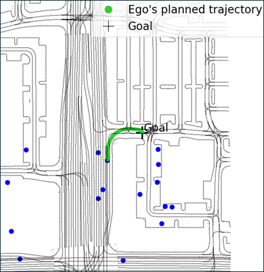
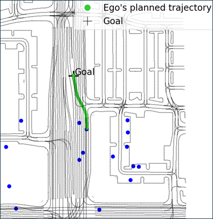

Autonomous driving requires reasoning about interactions with surrounding traffic. A prevailing approach is large-scale imitation learning on expert driving datasets, aimed at generalizing across diverse real-world scenarios. For online trajectory generation, such methods must operate at real-time rates. Diffusion models require hundreds of denoising steps at inference, resulting in high latency. Consistency models mitigate this issue but rely on carefully tuned noise schedules to capture the multi modal action distributions common in autonomous driving. Adapting the schedule typically requires expensive retraining. To address these limitations, we propose a framework based on conditional flow matching that jointly predicts future motions of surrounding agents and plans the ego trajectory in real time. We train a lightweight variance estimator that selects the number of inference steps online, removing the need for retraining to balance runtime and imitation learning performance. To further enhance ride quality, we introduce a trajectory post-processing step cast as a convex quadratic program, with negligible computational overhead. Trained on the Waymo Open Motion Dataset, the framework performs maneuvers such as lane changes, cruise control, and navigating unprotected left turns without requiring scenario-specific tuning. Our method maintains a 20 Hz update rate on a NVIDIA RTX 3070 GPU, making it suitable for online deployment. Compared to transformer, diffusion, and consistency model baselines, we achieve improved trajectory smoothness and better adherence to dynamic constraints.
To comply with the double-anonymous review process, we will release the code upon acceptance of the paper.
Ego Single Lane Change
Ego Dual Lane Change
Traffic Lane Change
Intersection Behavior
Wait Before Turn
Unprotected Left Turn
Approaching Stopped Traffic
Stop and Go

Initial Goal

Updated Goal